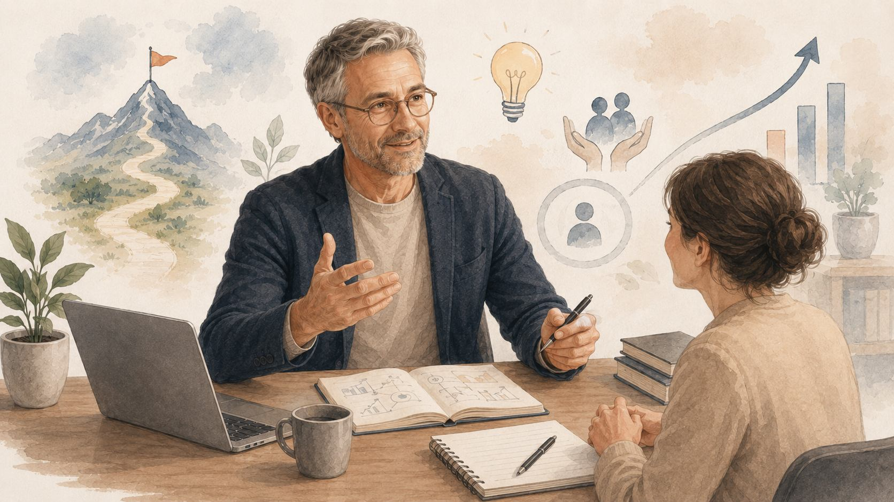

Om Robert

Robert Espenkrona är en naturlig ledare, utbildare och idéskapare med ett starkt intresse för människor, utveckling och praktiska lösningar.
Att hjälpa människor framåt
Robert tycker om att hjälpa människor att växa. Han tycker att det är inspirerande att se glöden i ögonen när människor utvecklas, överträffar sig själva och presterar mer än de tidigare trodde var möjligt.
Fär honom handlar arbetssökande inte bara om CV, personligt brev och annonser. Det handlar också om självfärtroende, struktur, energi och att få tillbaka känslan av kontroll.
Bakgrunden till metoden
Robert deltog i ett arbetsmarknadsprojekt som gick ut på att stödja och matcha arbetslösa personer i Fas 3. Många av deltagarna hade varit utanför arbetsmarknaden länge och behövde ett nytt sätt att tänka och agera.
Projektet blev en ögonöppnande erfarenhet. Under arbetets gång utvecklade Robert nya och mer praktiska metoder för att söka jobb. Metoderna testades i verkligheten och visade sig fungera mycket bra.
En annan syn på jobbsökande
Robert menar att jobbsökande inte ska vara energidödande, passivt eller hopplöst.
Det ska vara aktivt, strukturerat och gärna till och med roligt.
Genom att använda sina resurser på rätt sätt, tänka lokalt, bygga relationer och ta eget ansvar kan en arbetssökande öka sina chanser betydligt.
“Att söka jobb ska vara kul och givande, inte jobbigt och energidödande.”
Varför sidan finns
Den här sidan finns för att fler människor ska få tillgång till ett mer praktiskt och mänskligt sätt att söka jobb.
Målet är att hjälpa arbetssökande att skapa kontroll, bygga självfärtroende och hitta nya vägar in på arbetsmarknaden.